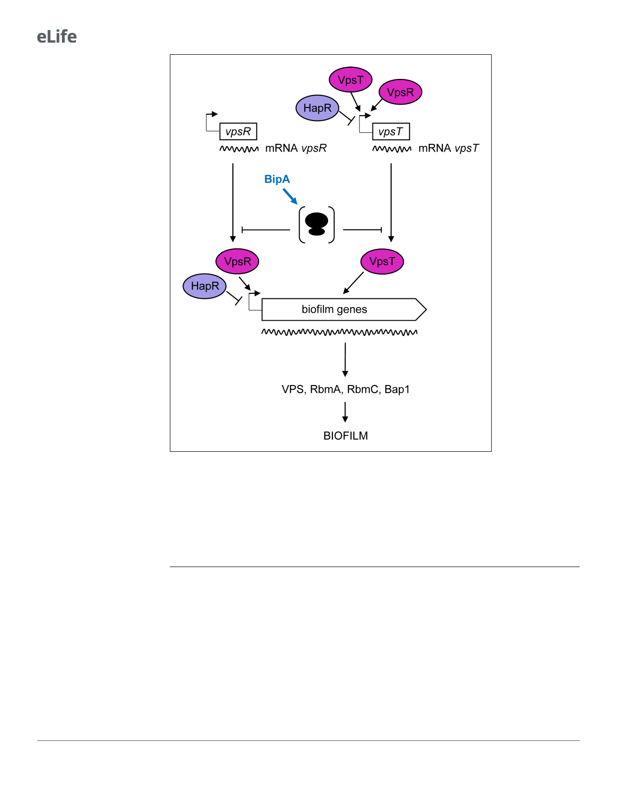

Research article
Microbiology and Infectious Disease
Figure 7. Proposed model for BipA within the Vibrio cholerae biofilm regulatory cascade. Schematic showing the
proposed model for the interplay between the main biofilm transcriptional regulators, VpsR, VpsT, and HapR, and
the translational repressor, BipA. In HapRÀ strains, transcription of vpsR and vpsT and the biofilm genes (vpsI and
vpsII clusters encoding the Vibrio polysaccharide [VPS], and rbmA, rmbC, and bap1 encoding the matrix proteins)
leads to biofilm formation at 37˚C but not at 22˚C, where high levels of BipA inhibit translation of the mRNAs of
the biofilm activators and/or structural genes. In HapR+ strains, transcription of both the biofilm activators and the
biofilm genes is negatively regulated by HapR, and no biofilm is produced (i.e. a smooth colony forms). At 22˚C,
BipA constitutes an additional layer of control by ensuring that, even if residual levels of biofilm-associated
transcripts are produced, their translation would be inhibited.
biofilm formation, it seems likely that the presence or absence of HapR could account for the
observed differences in the temperature-dependent regulation between these V. cholerae strains.
These results further underscore the diversity of biofilm regulatory processes in pathogenic V. chol-
erae, especially in strains where the master regulator HapR is absent.
The data presented in this work show that HapR neither regulates BipA production (Figure 4A
and B) nor influences the effect of DbipA on cell motility (Supplementary file 1 – Supplementary
Figure 6). Although HapR or BipA alone (HapR+ strains and high temperature or HapRÀ strains at
low temperature, respectively) are sufficient to prevent rugose colony morphology
(Supplementary file 1 – Supplementary Figure 3A and B), these proteins both contribute to
the repression of biofilm gene expression via transcriptional and translational control. Moreover, our
proteomics data showed that BipA, like HapR, impacts many processes including virulence,
12 of 23